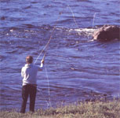

PAUL VON BAICH
Guide George Merasty has put the outboard at full throttle. Since Nueltin Lake is more than 120 miles long, getting to a good fishing site from any of the three camps will typically involve traveling 30 Or 40 miles one way. That means motoring along at a good clip.